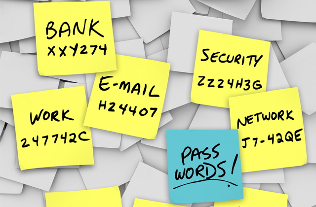
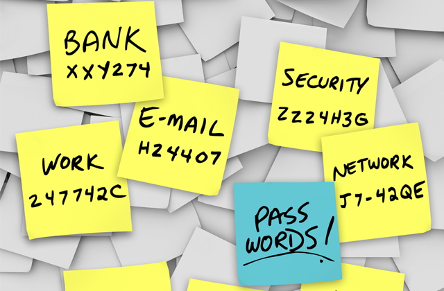
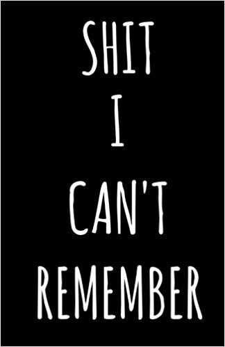

¡Bienvend@ a Contraseña Segura!
Olvídate de sentirte vulnerable con todos esos post-its visibles con las contraseñas que utilizas diariamente.
No necesitarás tener bajo llave esa libretita donde escribes todas las contraseñas nuevas que generas.
Y mucho menos tendrás que recordar una contraseña mas para tener acceso a ese archivo donde las tienes guardadas.
¡La solución ha llegado!
Con Contraseña Segura podrás cifrar tus contraseñas y tú decidirás si anotarla en el post-it de tu color favorito, en la libreta de gatitos que tanto te gusta, o guardarla nuevamente en un archivo, pero esta vez sin contraseñas. ¡Ufff!
NOTA:: Aquí mismo podrás descifrar tus contraseñas para utilizarlas cuando las necesites.
